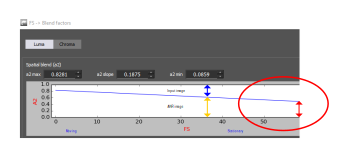

Motion compensated temporal filter (MCTF) futher reduces noise in
images.
Tune ANR and TF and load presets as
needed.
-
On the Pipeline tab, click
TF and then click a region in the Regions
group.
-
Click Load MCC Images and load at least
20 MCC images.
-
Click Load Flat Image and load at least
20 flat images.
-
Click Base Functions and tune after the
20th frame from DC64 to DC4 (Full pass is not used for MCTF).
-
Set the thresholds (Ytrsh, Utrsh, and Vtrsh) to be smaller than the SAD
of POIs for moving objects.
-
Set the thresholds (Ytrsh, Utrsh, and Vtrsh) to be larger than the SAD
of POIs for stationary objects.
-
Click Save to apply all changes.
-
Click Blend Factor.
-
Set a2 to make moving and stationary objects have a similar noise
level.
-
Set a2 according to the filter strength (FS) (e.g., if FS is high, set
a2 as high).
Figure : Blending factors of MCTF
